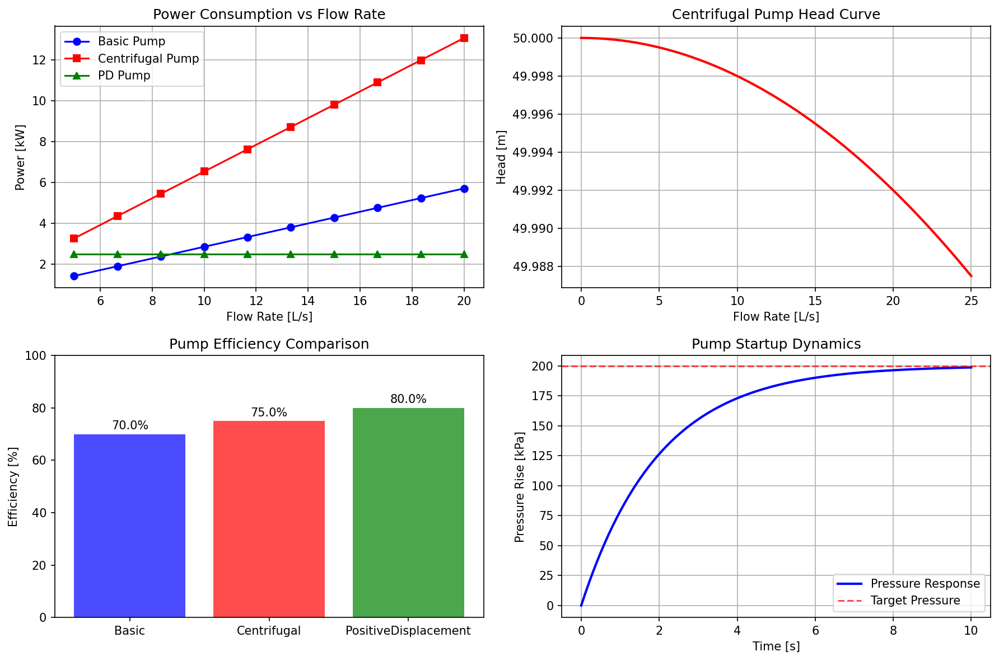

Pump Examples
This example demonstrates the usage of pump units in SPROCLIB.
Example Output
SPROCLIB Pump Examples
==================================================
=== Simple Pump Example ===
Pump: SimpleWaterPump
Inlet pressure: 101.3 kPa
Flow rate: 8.0 L/s
Outlet pressure: 301.3 kPa
Pressure rise: 200.0 kPa
Power required: 2.13 kW
Efficiency: 75.0%
=== Comprehensive Pump Comparison Example ===
Flow Rate [L/s] | Basic Pump [kW] | Centrifugal [kW] | PD Pump [kW]
-----------------------------------------------------------------
5.0 | 1.43 | 3.27 | 2.50
6.7 | 1.90 | 4.36 | 2.50
8.3 | 2.38 | 5.45 | 2.50
10.0 | 2.86 | 6.54 | 2.50
11.7 | 3.33 | 7.63 | 2.50
13.3 | 3.81 | 8.72 | 2.50
15.0 | 4.29 | 9.81 | 2.50
16.7 | 4.76 | 10.90 | 2.50
18.3 | 5.24 | 11.99 | 2.50
20.0 | 5.71 | 13.08 | 2.50
Plot saved as: C:\htdocs\github\paramus-experiments\paramus-experiments\paramus\chemistry\process_control\examples\pump_examples.png
=== Pump Specifications ===
BasicPump:
Type: Pump
Parameters: 4 defined
eta: 0.700
rho: 1000.000
flow_nominal: 1.000
delta_P_nominal: 200000.000
CentrifugalPump:
Type: CentrifugalPump
Parameters: 6 defined
eta: 0.750
rho: 1000.000
flow_nominal: 1.000
delta_P_nominal: 200000.000
H0: 50.000
K: 20.000
PositiveDisplacementPump:
Type: PositiveDisplacementPump
Parameters: 5 defined
eta: 0.800
rho: 1000.000
flow_nominal: 0.010
delta_P_nominal: 200000.000
flow_rate: 0.010
Examples completed successfully!
Try modifying the parameters in the code to see how
different pump configurations affect performance.
Generated Plot
{kind=link}
Source Code
The complete source code for this example can be found in:
examples/pump_examples.py
Key Features Demonstrated
Simple usage examples for quick learning
Comprehensive analysis for advanced applications
Real engineering calculations and parameters
Educational explanations and insights
This example is part of the refactored SPROCLIB where each unit class is now in its own file for better modularity and maintainability.